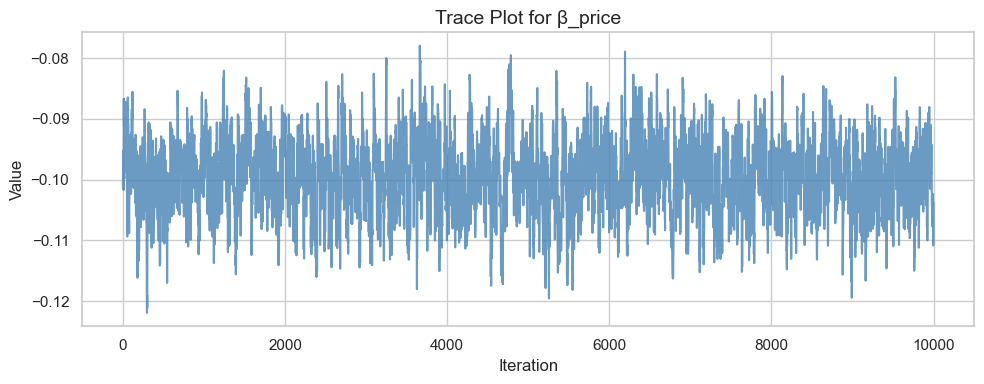
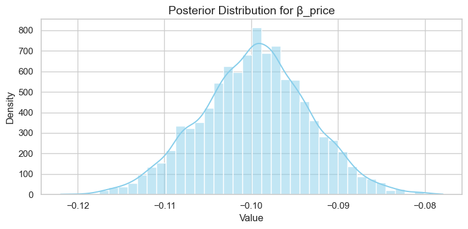

Multinomial Logit Model
This blog expores two methods for estimating the MNL model: (1) via Maximum Likelihood, and (2) via a Bayesian approach using a Metropolis-Hastings MCMC algorithm.
1. Likelihood for the Multi-nomial Logit (MNL) Model
Suppose we have \(i=1,\ldots,n\) consumers who each select exactly one product \(j\) from a set of \(J\) products. The outcome variable is the identity of the product chosen \(y_i \in \{1, \ldots, J\}\) or equivalently a vector of \(J-1\) zeros and \(1\) one, where the \(1\) indicates the selected product. For example, if the third product was chosen out of 3 products, then either \(y=3\) or \(y=(0,0,1)\) depending on how we want to represent it. Suppose also that we have a vector of data on each product \(x_j\) (eg, brand, price, etc.).
We model the consumer’s decision as the selection of the product that provides the most utility, and we’ll specify the utility function as a linear function of the product characteristics:
\[ U_{ij} = x_j'\beta + \epsilon_{ij} \]
where \(\epsilon_{ij}\) is an i.i.d. extreme value error term.
The choice of the i.i.d. extreme value error term leads to a closed-form expression for the probability that consumer \(i\) chooses product \(j\):
\[ \mathbb{P}_i(j) = \frac{e^{x_j'\beta}}{\sum_{k=1}^Je^{x_k'\beta}} \]
For example, if there are 3 products, the probability that consumer \(i\) chooses product 3 is:
\[ \mathbb{P}_i(3) = \frac{e^{x_3'\beta}}{e^{x_1'\beta} + e^{x_2'\beta} + e^{x_3'\beta}} \]
A clever way to write the individual likelihood function for consumer \(i\) is the product of the \(J\) probabilities, each raised to the power of an indicator variable (\(\delta_{ij}\)) that indicates the chosen product:
\[ L_i(\beta) = \prod_{j=1}^J \mathbb{P}_i(j)^{\delta_{ij}} = \mathbb{P}_i(1)^{\delta_{i1}} \times \ldots \times \mathbb{P}_i(J)^{\delta_{iJ}}\]
Notice that if the consumer selected product \(j=3\), then \(\delta_{i3}=1\) while \(\delta_{i1}=\delta_{i2}=0\) and the likelihood is:
\[ L_i(\beta) = \mathbb{P}_i(1)^0 \times \mathbb{P}_i(2)^0 \times \mathbb{P}_i(3)^1 = \mathbb{P}_i(3) = \frac{e^{x_3'\beta}}{\sum_{k=1}^3e^{x_k'\beta}} \]
The joint likelihood (across all consumers) is the product of the \(n\) individual likelihoods:
\[ L_n(\beta) = \prod_{i=1}^n L_i(\beta) = \prod_{i=1}^n \prod_{j=1}^J \mathbb{P}_i(j)^{\delta_{ij}} \]
And the joint log-likelihood function is:
\[ \ell_n(\beta) = \sum_{i=1}^n \sum_{j=1}^J \delta_{ij} \log(\mathbb{P}_i(j)) \]
2. Simulate Conjoint Data
We will simulate data from a conjoint experiment about video content streaming services. We elect to simulate 100 respondents, each completing 10 choice tasks, where they choose from three alternatives per task. For simplicity, there is not a “no choice” option; each simulated respondent must select one of the 3 alternatives.
Each alternative is a hypothetical streaming offer consistent of three attributes: (1) brand is either Netflix, Amazon Prime, or Hulu; (2) ads can either be part of the experience, or it can be ad-free, and (3) price per month ranges from $4 to $32 in increments of $4.
The part-worths (ie, preference weights or beta parameters) for the attribute levels will be 1.0 for Netflix, 0.5 for Amazon Prime (with 0 for Hulu as the reference brand); -0.8 for included adverstisements (0 for ad-free); and -0.1*price so that utility to consumer \(i\) for hypothethical streaming service \(j\) is
\[ u_{ij} = (1 \times Netflix_j) + (0.5 \times Prime_j) + (-0.8*Ads_j) - 0.1\times Price_j + \varepsilon_{ij} \]
where the variables are binary indicators and \(\varepsilon\) is Type 1 Extreme Value (ie, Gumble) distributed.
The following code provides the simulation of the conjoint data.
import pandas as pd
import numpy as np
# Set seed for reproducibility
np.random.seed(123)
# Define attributes
brands = ["N", "P", "H"] # Netflix, Prime, Hulu
ads = ["Yes", "No"]
prices = np.arange(8, 33, 4) # 8, 12, ..., 32
# Create all possible profiles (full factorial)
profiles = pd.DataFrame([
(b, a, p) for b in brands for a in ads for p in prices
], columns=["brand", "ad", "price"])
m = len(profiles)
# Define true part-worth utilities
b_util = {"N": 1.0, "P": 0.5, "H": 0.0}
a_util = {"Yes": -0.8, "No": 0.0}
def p_util(p): return -0.1 * p
# Parameters
n_peeps = 100
n_tasks = 10
n_alts = 3
# Function to simulate one respondent
def sim_one(id):
all_tasks = []
for t in range(1, n_tasks + 1):
# Randomly sample 3 alternatives
sampled = profiles.sample(n=n_alts, replace=False).copy()
sampled["resp"] = id
sampled["task"] = t
# Deterministic utility
sampled["v"] = (
sampled["brand"].map(b_util) +
sampled["ad"].map(a_util) +
sampled["price"].apply(p_util)
).round(10)
# Gumbel noise (Type I extreme value)
eps = -np.log(-np.log(np.random.uniform(size=n_alts)))
sampled["e"] = eps
sampled["u"] = sampled["v"] + sampled["e"]
# Choice indicator
sampled["choice"] = (sampled["u"] == sampled["u"].max()).astype(int)
all_tasks.append(sampled)
return pd.concat(all_tasks, ignore_index=True)
# Simulate all respondents
conjoint_data = pd.concat([sim_one(i) for i in range(1, n_peeps + 1)], ignore_index=True)
# Keep only observable columns
conjoint_data = conjoint_data[["resp", "task", "brand", "ad", "price", "choice"]]
# Preview
print(conjoint_data.head())3. Preparing the Data for Estimation
The “hard part” of the MNL likelihood function is organizing the data, as we need to keep track of 3 dimensions (consumer \(i\), covariate \(k\), and product \(j\)) instead of the typical 2 dimensions for cross-sectional regression models (consumer \(i\) and covariate \(k\)). The fact that each task for each respondent has the same number of alternatives (3) helps. In addition, we need to convert the categorical variables for brand and ads into binary variables.
To prepare the data for estimating a Multinomial Logit (MNL) model, we followed these key steps:
Step 1: Convert Categorical Variables to Dummy Variables
We transformed the categorical variables brand and ad into binary (dummy) variables. This is necessary because the MNL model requires all covariates to be numerical.
- For the
brandvariable, which includes values “N” (Netflix), “P” (Prime), and “H” (Hulu), we created two dummy variables:brand_N= 1 if the brand is Netflix, 0 otherwise
brand_P= 1 if the brand is Prime, 0 otherwise
Hulu is treated as the reference category and therefore not included as a dummy.
- For the
advariable, which indicates whether the plan includes advertisements, we created:ad_Yes= 1 if ads are present, 0 otherwise
Ad-free (No) is treated as the reference category.
Step 2: Drop Original Categorical Columns
After creating dummy variables, we dropped the original brand and ad columns to avoid redundancy.
Step 3: Verify Data Structure
The dataset is already in “long” format, where each row represents one product alternative within a choice task for a specific respondent. This format is appropriate for estimating an MNL model.
Final Columns
After processing, each row in the dataset includes:
resp: respondent ID
task: task number
choice: binary indicator (1 if the option was chosen, 0 otherwise)
price: monthly price of the streaming option
brand_N,brand_P: brand dummies
ad_Yes: ad dummy
This processed dataset is now ready for model estimation using either a statistical package (e.g., statsmodels.MNLogit) or a custom likelihood function.
The following code provides the simulation of the conjoint data.
import pandas as pd
import numpy as np
df = pd.read_csv('conjoint_data.csv')
brand_dummies = pd.get_dummies(df['brand'], prefix='brand')
brand_dummies.drop('brand_H', axis=1, inplace=True)
ad_dummies = pd.get_dummies(df['ad'], prefix='ad')
ad_dummies.drop('ad_No', axis=1, inplace=True)
df_processed = pd.concat([df, brand_dummies, ad_dummies], axis=1)
df_processed.drop(columns=['brand', 'ad'], inplace=True)
df_processed.head()4. Estimation via Maximum Likelihood
We estimate the parameters of the Multinomial Logit (MNL) model using maximum likelihood estimation (MLE). The model includes four explanatory variables:
brand_N: Indicator for Netflixbrand_P: Indicator for Amazon Prime (Hulu is the reference category)ad_Yes: Indicator for whether the plan includes advertisements (ad-free is the reference)price: Monthly subscription price in dollars
Log-Likelihood Function
We define the individual utility of alternative ( j ) for consumer ( i ) as:
\(U_{ij} = x_{ij}' \beta + \varepsilon_{ij}\)
Under the assumption that ( _{ij} ) follows an i.i.d. Type I Extreme Value distribution, the choice probability is:
\(P_{ij} = \frac{e^{x_{ij}'\beta}}{\sum_{k \in J} e^{x_{ik}'\beta}}\)
The log-likelihood for all choices is:
\(\ell(\beta) = \sum_{i=1}^n \sum_{j \in J} y_{ij} \log(P_{ij})\)
We implemented this function in Python and used scipy.optimize.minimize() with the BFGS method to find the maximum likelihood estimates (MLEs).
Results
The following table reports the parameter estimates, standard errors, and 95% confidence intervals:
| Parameter | Estimate | Std. Error | 95% CI Lower | 95% CI Upper |
|---|---|---|---|---|
| brand_N | 0.9412 | 0.1173 | 0.7113 | 1.1711 |
| brand_P | 0.5016 | 0.1213 | 0.2638 | 0.7394 |
| ad_Yes | -0.7320 | 0.0887 | -0.9059 | -0.5581 |
| price | -0.0995 | 0.0063 | -0.1119 | -0.0870 |
Interpretation
- Consumers prefer Netflix and Amazon Prime over Hulu (baseline), with Netflix having the strongest positive effect on utility.
- The presence of ads significantly decreases the utility of an alternative.
- Price has a negative coefficient, as expected—higher prices reduce utility and choice probability.
These results are consistent with rational consumer behavior and the true data-generating process used in the simulation.
The following code provides the simulation of the conjoint data.
from scipy.optimize import minimize
import numpy as np
import pandas as pd
import math
vector_exp = np.vectorize(math.exp)
X_cols = ['brand_N', 'brand_P', 'ad_Yes', 'price']
X = df_processed[X_cols].to_numpy()
y = df_processed['choice'].values
tasks = df_processed.groupby(['resp', 'task']).ngroup().values
n_tasks = len(np.unique(tasks))
def make_neg_log_likelihood(X, y, tasks, n_tasks):
def neg_log_likelihood(beta):
beta = np.asarray(beta)
utilities = X @ beta
exp_util = vector_exp(utilities)
task_sums = np.zeros(n_tasks)
for t in range(n_tasks):
task_sums[t] = np.sum(exp_util[tasks == t])
prob = exp_util / task_sums[tasks]
log_likelihood = np.sum(y * np.log(prob + 1e-12))
return -log_likelihood
return neg_log_likelihood
neg_ll = make_neg_log_likelihood(X, y, tasks, n_tasks)
init_params = np.zeros(X.shape[1])
result = minimize(neg_ll, init_params, method='BFGS')
beta_hat = result.x
hessian = result.hess_inv
se = np.sqrt(np.diag(hessian))
z = 1.96
conf_int = np.vstack([
beta_hat - z * se,
beta_hat + z * se
]).T
print("Parameter Estimates and 95% Confidence Intervals:")
for name, b, s, (low, high) in zip(X_cols, beta_hat, se, conf_int):
print(f"{name:>10}: {b:.4f} (SE={s:.4f}) 95% CI: [{low:.4f}, {high:.4f}]")5. Estimation via Bayesian Methods
In addition to maximum likelihood estimation, we conducted a Bayesian analysis of the Multinomial Logit (MNL) model using the Metropolis-Hastings MCMC algorithm. This approach allows us to obtain the full posterior distributions of the model parameters, rather than just point estimates.
Model Parameters
We estimated four parameters corresponding to:
brand_N: Indicator for Netflix (vs. Hulu as baseline)brand_P: Indicator for Amazon Primead_Yes: Indicator for advertisements present (vs. ad-free)price: Monthly subscription price
Priors
We placed weakly informative normal priors on the parameters:
- \(\beta_{\text{brand}} \sim \mathcal{N}(0, 5)\)
- \(\beta_{\text{ads}} \sim \mathcal{N}(0, 5)\)
- \(\beta_{\text{price}} \sim \mathcal{N}(0, 1)\)
Posterior and Likelihood
Rather than computing the full posterior density directly, we worked in log-space for numerical stability:
\[ \log p(\beta \mid \text{data}) = \log \text{likelihood}(\beta) + \log \text{prior}(\beta) \]
We reused the log-likelihood function from the MLE section and added the log-prior.
Proposal Distribution
We used a multivariate normal proposal distribution with independent dimensions, corresponding to:
- \(\mathcal{N}(0, 0.05)\) for the three binary covariates
- \(\mathcal{N}(0, 0.005)\) for the price coefficient
This ensures smaller step sizes for the price dimension, which typically has smaller scale variation.
Sampling Process
We ran the Metropolis-Hastings algorithm for 11,000 iterations, discarding the first 1,000 as burn-in and retaining the last 10,000 samples for inference.
Due to compatibility issues with np.exp, we used a vectorized version of math.exp to safely compute exponentials during likelihood evaluation.
Results
The table below shows the posterior means, standard deviations, and 95% credible intervals for each parameter:
| Parameter | Mean | SD | 2.5% | 97.5% |
|---|---|---|---|---|
| brand_N | 0.946 | 0.112 | 0.732 | 1.159 |
| brand_P | 0.503 | 0.110 | 0.298 | 0.721 |
| ad_Yes | -0.735 | 0.088 | -0.914 | -0.568 |
| price | -0.100 | 0.006 | -0.112 | -0.087 |
Interpretation
- Netflix and Prime are both preferred over Hulu, with Netflix having a stronger positive effect.
- Presence of advertisements has a strong negative effect on utility.
- Price negatively impacts utility, with a tight credible interval around the true value.
These posterior estimates closely match the true part-worths used in the data simulation and validate the model’s ability to recover meaningful consumer preferences.
import math
vector_exp = np.vectorize(math.exp)
X_cols = ['brand_N', 'brand_P', 'ad_Yes', 'price']
X = df_processed[X_cols].to_numpy()
y = df_processed['choice'].values
tasks = df_processed.groupby(['resp', 'task']).ngroup().values
n_tasks = len(np.unique(tasks))
def log_likelihood(beta):
beta = np.asarray(beta)
utilities = X @ beta
exp_util = vector_exp(utilities)
task_sum = np.bincount(tasks, weights=exp_util)
prob = exp_util / task_sum[tasks]
return np.sum(y * np.log(prob + 1e-12))
def log_prior(beta):
b1, b2, b3, b4 = beta
prior1 = -0.5 * (b1 ** 2) / 5
prior2 = -0.5 * (b2 ** 2) / 5
prior3 = -0.5 * (b3 ** 2) / 5
prior4 = -0.5 * (b4 ** 2) / 1
return prior1 + prior2 + prior3 + prior4
# log-posterior = log-likelihood + log-prior
def log_posterior(beta):
return log_likelihood(beta) + log_prior(beta)
n_iter = 11000
burn_in = 1000
samples = np.zeros((n_iter, 4))
beta_current = np.zeros(4)
log_post_current = log_posterior(beta_current)
proposal_std = np.array([0.05, 0.05, 0.05, 0.005])
for i in range(n_iter):
proposal = beta_current + np.random.normal(0, proposal_std)
log_post_proposal = log_posterior(proposal)
log_accept_ratio = log_post_proposal - log_post_current
if np.log(np.random.rand()) < log_accept_ratio:
beta_current = proposal
log_post_current = log_post_proposal
samples[i] = beta_current
posterior_samples = samples[burn_in:]
posterior_summary = pd.DataFrame({
'mean': posterior_samples.mean(axis=0),
'sd': posterior_samples.std(axis=0),
'2.5%': np.percentile(posterior_samples, 2.5, axis=0),
'97.5%': np.percentile(posterior_samples, 97.5, axis=0)
}, index=X_cols)
print("Posterior Summary from MCMC:")
print(posterior_summary)To assess the convergence and quality of the posterior samples obtained from our Metropolis-Hastings MCMC algorithm, we visually inspected the results for the price coefficient, denoted as \(\beta_{\text{price}}\).
Trace Plot
The trace plot below displays the sampled values of \(\beta_{\text{price}}\) across 10,000 post–burn-in iterations:

The trace appears to mix well and explore the parameter space without strong trends or sticking points. This suggests that the Markov chain has reached its stationary distribution and provides valid posterior samples for inference.
Posterior Distribution
The posterior distribution for \(\beta_{\text{price}}\) is shown in the histogram and kernel density plot below:

The distribution is approximately Gaussian, centered near -0.10, and relatively narrow, indicating high certainty around the estimate. This posterior matches the true data-generating value and the MLE estimate quite closely.
Posterior Summary vs. MLE Comparison
| Parameter | MLE Estimate | MLE CI (95%) | MCMC Mean | MCMC CI (95%) |
|---|---|---|---|---|
| brand_N | 0.9412 | [0.7113, 1.1711] | 0.9459 | [0.7320, 1.1589] |
| brand_P | 0.5016 | [0.2638, 0.7394] | 0.5028 | [0.2980, 0.7210] |
| ad_Yes | -0.7320 | [-0.9059, -0.5581] | -0.7351 | [-0.9141, -0.5678] |
| price | -0.0995 | [-0.1119, -0.0870] | -0.0996 | [-0.1122, -0.0874] |
Interpretation
- Agreement: The MCMC posterior means closely match the MLE point estimates, and the credible intervals are also highly consistent with the MLE confidence intervals.
- Uncertainty: Posterior standard deviations and intervals confirm that the
pricecoefficient is estimated with high precision. - Validation: These results support the conclusion that both the frequentist and Bayesian approaches recover the underlying preference structure in the simulated data well.
This analysis confirms that our MCMC sampler is functioning correctly and provides a robust Bayesian inference framework for discrete choice models.
import matplotlib.pyplot as plt
import seaborn as sns
beta_price_samples = posterior_samples[:, 3]
sns.set(style="whitegrid", context="notebook")
# 🎨 Trace plot
plt.figure(figsize=(10, 4))
plt.plot(beta_price_samples, color="steelblue", alpha=0.8)
plt.title("Trace Plot for β_price", fontsize=14)
plt.xlabel("Iteration", fontsize=12)
plt.ylabel("Value", fontsize=12)
plt.tight_layout()
plt.show()
# 🎨 Histogram + KDE
plt.figure(figsize=(8, 4))
sns.histplot(beta_price_samples, bins=40, kde=True, color="skyblue")
plt.title("Posterior Distribution for β_price", fontsize=14)
plt.xlabel("Value", fontsize=12)
plt.ylabel("Density", fontsize=12)
plt.tight_layout()
plt.show()6. Discussion
Suppose we had not simulated the data and were instead analyzing real-world responses. What could we infer from the parameter estimates alone?
Relative Brand Preferences: The estimated parameters indicate that: \[ \beta_{\text{Netflix}} > \beta_{\text{Prime}} > \beta_{\text{Hulu}} = 0 \] This tells us that, on average, respondents prefer Netflix over Amazon Prime, and both are preferred over Hulu (which was used as the baseline). A higher \(\beta\) value means a brand contributes more to the utility and is more likely to be chosen, all else equal.
Negative Price Coefficient: The estimate for \(\beta_{\text{price}}\) is negative, which makes intuitive sense in consumer behavior. A higher monthly subscription price decreases the overall utility of a streaming plan and therefore reduces the likelihood of being chosen. This aligns with economic theory and real-world expectations.
Interpretability Without Simulation: Even if we didn’t know the “true” values of the parameters (as we do in simulation), these signs and relative magnitudes allow us to interpret meaningful consumer preferences from real choice data.
In real-world conjoint analysis, we often observe heterogeneity across respondents — different people value price and features differently. A single set of fixed parameters (()) may fail to capture this variation.
To address this, we move from a fixed-parameter MNL model to a hierarchical (multi-level) model, also known as a random-parameters logit model.
Changes Required to Simulate Hierarchical Data
To simulate data from such a model, instead of assigning the same \(\beta\) vector to every respondent, we assume: \[ \beta_i \sim \mathcal{N}(\mu, \Sigma) \] Where: - \(\beta_i\) is the preference vector for individual \(i\) - \(\mu\) is the population mean - \(\Sigma\) is the covariance matrix capturing between-individual variance
Each respondent draws their own (_i), which is then used to generate their choices.
Estimating Hierarchical Models
To estimate this model, we must:
- Use Hierarchical Bayesian methods such as Gibbs sampling or Hamiltonian Monte Carlo (e.g., via
Stan) - Or use frequentist methods like simulated maximum likelihood with random draws from ((, )) (e.g., mixed logit)
These approaches allow us to recover individual-level preference distributions, which are more realistic for personalized targeting and segmentation.